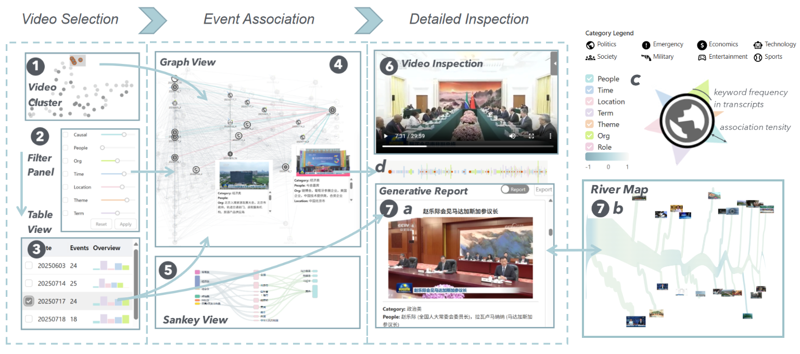

My research interests span three connected directions:
Data-centric AI: understanding model failures and improving capabilities through better data and evaluation.Self-improving agents: memory, reusable skills, and adaptive harnesses for continual learning and reliable long-horizon behavior.Human–AI interaction: helping people understand, evaluate, and guide how AI systems learn and act.
These interests build on my work in visual analytics , model diagnosis , continual learning , and agent skill learning .
I work with Prof. Ke Xu at iMATE Lab in Nanjing University’s School of Intelligence Science and Technology . I also collaborate with Prof. Weikai Yang at HKUST (Guangzhou) , in the Data Science and Analytics and Computational Media and Arts thrusts of the Information Hub , and with Dr. Wenchao Li .
I’m seeking research internships, industry internships, and PhD opportunities . If our research interests align, I’d love to hear from you .
News
Sep 2026 We have submitted two papers to CHI 2027 and one to AAAI 2027 . Many thanks to my collaborators for their ideas, dedication, and support!
Aug 2026 Our preprint SkillCommit is now on arXiv. Many thanks to Weikai Yang for the collaboration!
Apr 2026 NetworkCanvas appears in the CHI 2026 proceedings.
Mar 2026 Our preprint MSSR , on adaptive replay for continual LLM fine-tuning, is available on arXiv.
Selected research
arXiv ’26
Yu He , Weikai Yang
Designed a replay-validated algorithm that turns agent experience into reusable skills , expanding their scope without updating model parameters.
Improved performance across three reasoning benchmarks , with learned skills transferring across model sizes and families.
CHI ’26 Published conference paper
Wenchao Li, Yuewen Gao, Yu He , Cong Zhu, Ke Xu
Built a network exploration system with adaptive recommendations and a branching history, helping users choose analytical steps and revisit alternative paths.
Controlled studies found more noteworthy observations and higher analytical confidence than exploration without recommendations.
arXiv ’26
Yiyang Lu, Yu He , Jianlong Chen, Hongyuan Zha
Developed a memory-aware replay strategy that estimates sample-level memory strength and schedules rehearsal to reduce forgetting during continual LLM fine-tuning.
Across three models and 11 sequential tasks , outperformed compared replay baselines, with strong gains on reasoning tasks.
Earlier research

NewsTract — Multimodal Analysis of News Videos: Event-based Visual Summarization over Serial Broadcasts Yuewen Gao, Yu He , Xianglei Lv, Yingying Dong, Ke Xu
Developed a visual analytics system that links events across news broadcasts using video, audio, and text , revealing how stories evolve.
In a 16-participant study , users understood more events and identified more connections with greater confidence than with the CCTV video archive.
Background
Selected honors Nov 2025 Nanjing University People’s Scholarship May 2025 Meritorious Winner, Mathematical Contest in Modeling · COMAP Dec 2024 National Third Prize, China Collegiate Innovation and Invention Competition
{kind=link}
{kind=link}
{kind=link}
{kind=link}